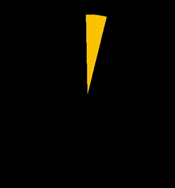

- 60 哪个 css 格式化工具是你的首选
- 59 CSS 选择器详解 12 个必知用法与最佳实践
- 58 动态视口单位之 dvh、svh、lvh
- 57 不规则造型按钮解决方案
- 56 不定宽文本溢出跑马灯效果完美解决方案
- 55 巧用 CSS 变量，实现动画函数复用
- 54 角向渐变的妙用
- 53 有趣的六芒星能力图动画
- 52 有意思的气泡 Loading 效果
- 51 CSS 原生支持的三角函数
- 50 有意思的网格下落加载效果
- 49 有意思的 Emoji 3D 表情切换效果
- 48 神奇的 3D 磨砂玻璃透视效果
- 47 抢先体验！超强大的 Anchor Positioning 锚点定位
- 46 CSS 也能实现碰撞检测
- 45 现代 CSS 解决方案 - 数学函数 Round
- 44 现代 CSS 解决方案 - 原生嵌套
- 43 神奇的背景，生化危机4日食 Loading 动画还原
- 42 当路径动画遇到滚动驱动
- 41 CSS 还原拉斯维加斯球数字动画
- 40 单标签下多色块随机文字随机颜色动画
- 39 CSS 也能实现 if 判断？实现动态高度下的不同样式展现
- 38 Flex 布局下居中溢出滚动截断问题
- 37 带圆角的虚线边框
- 36 现代 CSS 解决方案：文字颜色自动适配背景色
- 35 神奇的 3D 卡片反光闪烁动效
- 34 现代 CSS 解决方案：accent-color 强调色
- 33 巧用 has 和 drop-shadow 实现复杂布局效果
- 32 巧用 CSS + SVG 实现复杂线条光效动画
- 31 极具创意的鼠标交互动画
- 30 标准滚动条控制规范 scrollbar-color 和 scrollbar-width
- 29 类 ChatGpt 多行文本打字效果
- 28 神奇的卡片 Hover 效果与 Blur 的特性探究
- 27 渐变边框文字效果
- 26 巧妙使用多种方式实现单侧阴影
- 25 全尺寸的带圆角的渐变边框
- 24 开发中保证你用得到的 css 小技巧
- 23 您应该了解的 15 个有用的 CSS 属性
- 22 CSS 行元素的截断样式 box-decoration-break 属性
- 21 用 SASS 简化媒体查询
- 20 为什么你应该停止使用传统的 margin 和 padding 来设置 CSS 样式
- 19 sass 优化响应式布局代码
- 18 盘点 CSS 文本两端对齐的 N 种方式
- 17 如何修改滚动条的样式
- 16 CSS 模拟图片透明的棋盘背景
- 15 文本描边完美实现
- 14 你需要自定义 @property 而不是 CSS 变量的情况
- 13 从高度 0 过渡到自动高度
- 12 一些 css 语法解释
- 11 scss 日常用法
- 10 sass 指南
- 09 CSS 颜色设置透明度的新姿势
- 08 CSS 属性 appearance
- 07 CSS 动画性能优化
- 06 CSS 功能特性
- 05 CSS 中的 var() 函数
- 04 15 个你不知道的 CSS 属性
- 03 will-change
- 02 normalize.css 清除元素默认样式
- 01 纯 CSS 获取屏幕宽高
在 CSS 中，存在许多数学函数，这些函数能够通过简单的计算操作来生成某些属性值，例如在现代 CSS 解决方案：CSS 数学函数一文中，我们详细介绍了
- calc()：用于计算任意长度、百分比或数值型数据，并将其作为 CSS 属性值。
- min() 和 max()：用于比较一组数值中的最大值或最小值，也可以与任意长度、百分比或数值型数据一同使用。
- clamp()：用于将属性值限制在一个范围内，支持三个参数：最小值、推荐值和最大值。
在 现代 CSS 解决方案：CSS 原生支持的三角函数 一文中，给大家介绍了从 Chrome 111 开始也逐渐开始原生支持的三角函数：
- sin()
- cos()
- tan()
而本文，我们将介绍另外一个非常有意思的数学函数 - round()。
何为 round()？
简单来说，round() CSS 函数的作用就是根据选定的舍入策略返回舍入数。
举个例子，在 JavaScript 中，我们可以使用 Math.round() 返回一个数字四舍五入后最接近的整数。
譬如：
x = Math.round(20.49); //20
x = Math.round(20.5); //21
x = Math.round(-20.5); //-20
x = Math.round(-20.51); //-21
现在，CSS 借助 round() 函数也有了相同的能力：
line-height: round(2.2, 1); /* 2 */
line-height: round(14.82, 1); /* 15 */
line-height: round(5.5, 1); /* 6 */
也就是说，round(2.2, 1) 中的 2.2 四舍五入后，最后的计算值是 2。
round() 完整语法
round() 的完整语法规则还是比较复杂的。完整的介绍可以看 MDN - round()。
使用它，可以完美实现类似于 JavaScript 中的如下几个方法：
它的完整语法规则：
<round()> = round( <rounding-strategy>?, <valueToRound> , <roundingInterval> )
可以看到，它最多可以接收 3 个参数，并且第一个参数是可选参数：
<rounding-strategy>：可选参数，表示舍入策略。 这可能是以下值之一：up: 相当于 JavaScript Math.ceil() 方法，将 valueToRound 向上舍入到 roundingInterval 最接近的整数倍。 这相当于 JavaScript Math.ceil() 方法。down：将 valueToRound 向下舍入为 roundingInterval 最接近的整数倍。 这相当于 JavaScript Math.floor() 方法。nearest：将 valueToRound 舍入为 roundingInterval 的最接近的整数倍，该倍数可以高于或低于该值。 如果 valueToRound 是上方和下方舍入目标之间的一半，则会向上舍入。 相当于 JavaScript Math.round()。to-zero：将 valueToRound 舍入为 roundingInterval 接近/接近零的最接近整数倍。 这相当于 JavaScript Math.trunc() 方法。
<valueToRound>：需要被四舍五入的值。 必须是<number>、<dimension>或<percentage>，或者解析为这些值之一的数学表达式。<roundingInterval>：舍入的间隔规则。 这是一个<number>、<dimension>或<percentage>，或者解析为这些值之一的数学表达式。
基于此，举几个例子：
<div class="box-1"></div>
<div class="box-2"></div>
<div class="box-3"></div>
<div class="box-4"></div>
<div class="box-5"></div>
:root {
--rounding-interval: 25px;
}
div {
width: 100px;
background: rgba(255, 100, 0, 0.8);
}
div.box-1 {
height: round(
nearest,
110px,
var(--rounding-interval)
); /* 最终计算值：100px */
}
div.box-2 {
height: round(up, 110px, var(--rounding-interval)); /* 最终计算值：125px */
}
div.box-3 {
height: round(down, 120px, var(--rounding-interval)); /* 最终计算值：100px */
}
div.box-4 {
height: round(
to-zero,
120px,
var(--rounding-interval)
); /* 最终计算值：100px */
}
div.box-5 {
height: round(120px, var(--rounding-interval)); /* 最终计算值：125px */
}
结果如下：
图中背景一个格子的大小是
25px
完整的 DEMO 可以看这里 CodePen Demo - CSS Math Function Round() Demo
round 能解决什么问题？
OK，铺垫了那么久，我们下面进入实战环节。
那么，round() 函数在 CSS 中有什么具体的作用吗？能应用到什么地方？
解决基于 transform 的模糊问题
在之前的 疑难杂症：运用 transform 导致文本模糊的现象探究 这篇文章中，我们介绍了一种基于 transform 的模糊问题。
我们来回顾一下问题现象：
在我们的页面中，经常会出现这样的问题，一块区域内的文本或者边框，在展示的时候，变得特别的模糊，如下(数据经过脱敏处理)：
正常而言，应该是这样的：
emmm，可能大图不是很明显，我们取一细节对比，就非常直观了：

那么？什么时候会触发这种问题呢？在 Google 上，其实我们能搜到非常多类似的案例，总结而言：
- 当文本元素的某个祖先容器存在
transform: translate()或者transform: scale()等transform操作时，容易出现这种问题
当然，这只是必要条件，不是充分条件。继续深入探究，会发现，必须还得同时满足一些其它条件：
- 元素作用了
transform: translate()或者transform: scale()后的计算值产生了非整数
譬如，上述案例触发的 CSS 代码如下：
.container {
position: absolute;
width: 1104px;
height: 475px;
top: 50%;
transform: translateY(-50%);
// ...
}
由于元素的高度为 475px，translateY(-50%) 等于 237.5px，非整数，才导致了内部的字体模糊。
但是，需要注意的是，并非所有产生的非整数都会导致了内部的字体模糊。
这里有个简单的示意：
还是上述的例子，当高度从 477px 一直调整到 469px 的过程中，只有 477px 和 475px 导致了模糊，而 473, 471, 469 则没有。所以，这也只是引发模糊的一个必要条件。
- 文本内容是否模糊还与屏幕有关，高清屏（dpr > 2）下不容易触发，更多发生在普通屏幕下（dpr = 1）
在我实测的过程中还发现，这个现象基本只会发生在 dpr 为 1 的普通屏幕下。
类似于 MAC 的高清屏幕则不太会触发这个问题。
dpr = 物理像素 / 设备独立像素，表示设备像素比。这个与我们通常说的视网膜屏（多倍屏，Retina 屏）有关。设备像素比描述的是未缩放状态下，物理像素和设备独立像素的初始比例关系。
- 并非所有浏览器都是这个表现，基本发生在 chromium 内核。
那么，为何会发生这种现象？针对这个问题，没有找到特别官方的回答，普遍的认为是因为：
由于浏览器将图层拆分到 GPU 以进行 3D 转换，而非整数的像素偏移，使得 Chrome 在字体渲染的时候，不是那么的精确。
关于这个问题，感兴趣的可以再看看这两个讨论：
- Chromium Bugs -- Issue 521364: Transformed text at fractional offsets is very blurry.
- Serious bug: Slick Slider turns off subpixel font rendering on the entire site in Chrome #2275
使用 round() 函数解决模糊问题
在之前，上面的这个基于 transform 的问题基本是无解的，想要不模糊，就需要替换掉 transfrom 方法。
而在有了 round() 后，我们可以通过 round() 函数，保证作用了 transform: translate() 或者 transform: scale() 后的计算值一定是正整数，从而避免模糊问题。
譬如，原本的 CSS 如下：
.container {
width: 50vw;
height: 50vh;
transform: translate(-50%, -50%);
}
此时，transform: translate() 的实际最终计算值是会出现小数的。因此，我们可以使用 round() 函数进行取整：
.container {
width: 50vw;
height: 50vh;
transform: translate(round(-50%, 1px), round(-50%, 1px));
}
我们可以使用如下 JavaScript 代码，打印出 transform 实时的计算值。
window.addEventListener("resize", () => {
const transform = getComputedStyle(
document.querySelectorAll("div")[0]
).transform;
console.log("transform:", transform);
});
如果使用 transform: translate(-50%, -50%) resize 整个页面，可以看到如下打印值：
可以看到，此时，transform: matrix(1, 0, 0, 1, -50.5, -106.75) 的中的后两位，其实就是 transform: translate(-50.5px, 106.75px)，是存在小数值的。
而使用了 transform: translate(round(-50%, 1px), round(-50%, 1px)) 后，将不会再出现小数值：
完整的代码，你可以戳这里试一试：CodePen Demo -- round() Demo
借由 round() 函数，我们成功的解决了一直以来，Chrome 中非常棘手的一个模糊问题！
使用 round() 模拟步骤缓动动画
round() 还有一个有趣用法。我们可以使用 round() 实现类似于 CSS Animation 中的 steps() 步骤动画的效果。
我们来看这么一个 DEMO：
<div></div>
@property --angle {
syntax: "<angle>";
inherits: false;
initial-value: 0deg;
}
div {
width: 200px;
height: 200px;
border-radius: 50%;
background: conic-gradient(
#fc0,
#fc0 15deg,
transparent 15deg,
transparent 30deg
);
transform: rotate(var(--angle));
animation: propertyRotate 2s infinite linear;
}
@keyframes propertyRotate {
100% {
--angle: 360deg;
}
}
这里，我们实现了这么一个动画效果：
我们可以利用 round()，把一个连贯动画，拆解成步骤动画：
div {
// ...
// transform: rotate(var(--angle));
transform: rotate(round(var(--angle), 30deg));
}
上面，我们使用 transform: rotate(round(var(--angle), 30deg)) 替换了 transform: rotate(var(--angle))。
而 round(var(--angle), 30deg) 保证了其取值只能是 30deg 的倍数或者 0deg。因此，我们可以得到和使用 stpes() 步骤动画一样的效果：
上面使用了 round() 的动画，和如下的动画效果是一致的：
div {
transform: rotate(round(var(--angle), 30deg));
}
// 等同于
div {
transform: rotate(var(--angle));
animation: propertyRotate 2s infinite steps(12);
}
因此，使用 round()，我们也可以轻松的实现类似如下的 Loading 动画效果：
完整的代码，你可以戳这里进行了解：CodePen Demo -- CSS Math Function Round() Animation Demo